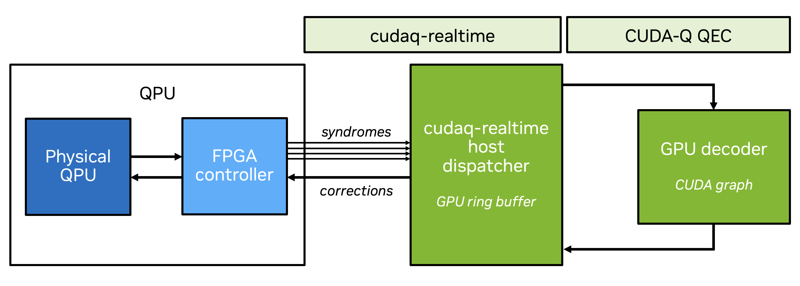
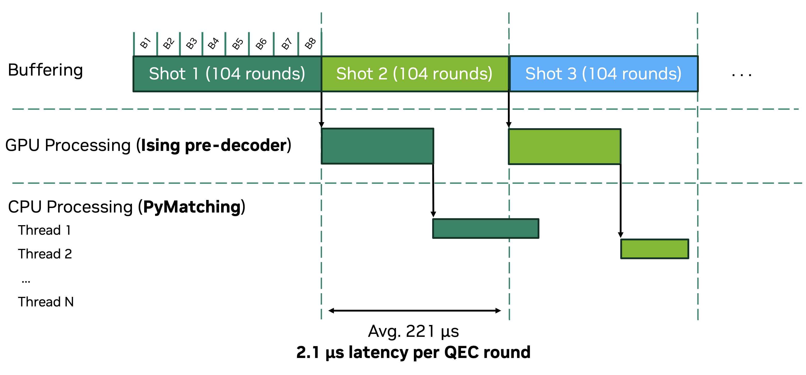
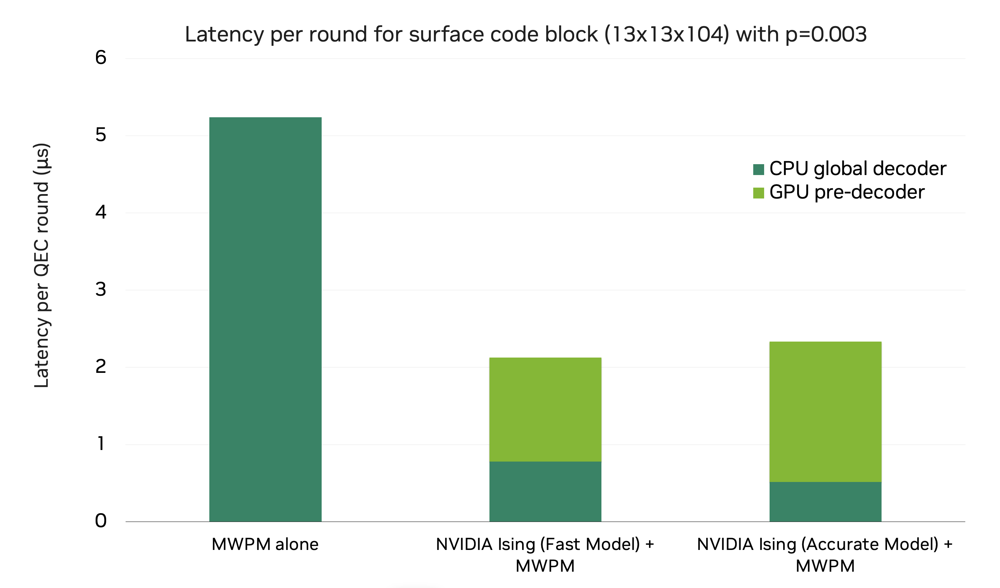

CUDA-Q QEC 0.6 Enables Real-Time QEC with NVQLink
At GTC 2026, NVIDIA introduced cudaq-realtime, a new library built on NVQLink that provides a runtime API for microsecond-latency callbacks between GPUs and quantum controllers. CUDA-Q QEC 0.6 integrates directly with cudaq-realtime to bring GPU-accelerated decoding into the real-time quantum control loop. Now any quantum hardware vendor using NVQLink is able to draw on the power of the CUDA-Q QEC library for real-time decoding.
CUDA-Q QEC 0.6 ships with two new real-time-capable decoder pipelines: the RelayBP belief-propagation decoder for qLDPC codes and an NVIDIA Ising convolutional neural network (CNN) pre-decoder paired with a global decoder (PyMatching) for the surface code. These pipelines enable quantum vendors and QEC researchers to deploy real-time GPU decoding for two popular code families via NVQLink.
This blog describes in detail how CUDA-Q QEC 0.6 interacts with NVQLink, allowing developers to see how they can begin to build highly optimized quantum error correction workflows.
Why real-time QEC matters
For state-of-the-art quantum processors, the decoding window can be just a few microseconds per QEC round. Meeting this deadline requires decoding hardware and software that can process syndrome data at the clock rate of the QPU, with classical compute tightly coupled to the quantum control system. GPUs can be well-suited for this problem, delivering high-throughput for both algorithmic decoders and inference for neural network-based decoders. GPUs also have the advantage of being programmable, meaning that GPU-based control hardware can easily keep pace with the rapid process in error correction research. For real-time QEC, however, GPU acceleration must be connected to the quantum control loop with minimal overhead.
Running QEC in real time on NVQLink
Figure 1 illustrates the architecture for real-time decoding with CUDA-Q QEC. As the quantum processor runs QEC rounds, syndrome data is captured by the FPGA quantum controller and transmitted to the host GPU. Each syndrome arrives as an individual RPC message in a GPU-visible ring buffer. The cudaq-realtime dispatch layer detects the new message, routes it to a registered CUDA-Q QEC decoder, and places the correction back in the ring buffer for transmission to the controller.

Figure 1: Real-time decoding withcudaq-realtime and a GPU-accelerated decoder in CUDA-Q QEC. Syndrome data flows from the QPU through the FPGA controller to a GPU ring buffer. The cudaq-realtime host dispatcher launches the decoder as a CUDA graph, and corrections are returned through the same ring buffer back to the FPGA controller.
The cudaq-realtime library is transport-agnostic: it operates on GPU-visible ring buffers and an RPC dispatch protocol without assuming a specific interconnect. The physical transport layer maps syndrome and correction data into these ring buffers. On the GPU side, a CPU-side host dispatcher thread monitors the ring buffer flags, launches the decoder's pre-captured CUDA graph for each incoming syndrome, and signals the correction slot for return transmission.
Integrating a CUDA-Q QEC decoder with cudaq-realtime is done in C++ using the decoder.h plugin interface and the libcudaq-realtime C API. There is no Python binding for the real-time dispatch path — this latency-critical data plane is entirely in C/C++ and CUDA.
A decoder plugin that supports real-time graph dispatch implements three virtual methods on cudaq::qec::decoder:
// From cudaq/qec/decoder.h
virtual bool supports_graph_dispatch() const { return false; }
virtual void *capture_decode_graph(int reserved_sms = 0) { return nullptr; }
virtual void release_decode_graph(void *graph_resources) {}
All decoder-specific internals (e.g., BP context, relay iteration parameters, shared memory configuration) are encapsulated inside the decoder plugin's capture_decode_graph() implementation. The caller never sees them.
Details on the complete real-time integration for the RelayBP decoder are available as an example in the CUDA-Q QEC repository. This capability builds on previous qLDPC decoding efforts with our partners; Quantinuum recently demonstrated real-time QEC on their Helios system using GPU-accelerated decoding via a custom integration with CUDA-Q QEC. That work showed that GPU decoding can meet the timing requirements of a real trapped-ion processor. With CUDA-Q QEC 0.6, we provide a standard interface that any quantum hardware vendor supporting NVQLink can adopt, making real-time GPU decoding accessible across the quantum computing ecosystem.
AI pre-decoding with NVIDIA Ising
Global decoders such as PyMatching can be a bottleneck for real-time QEC at scale. NVIDIA Ising, an open source model family, includes pre-decoders for accelerating QEC. Pre-decoders help address the bottleneck of global decoding by performing a fast, approximate first pass that resolves the majority of syndromes before forwarding residual cases to the global decoder, reducing the fraction of syndromes that require full decoding. The pre-decoder is trained as a convolutional neural network (CNN) that maps syndrome patterns to approximate corrections.
CUDA-Q QEC 0.6 enables real-time QEC workflows with the NVIDIA Ising pre-decoder: the trained model is exported to ONNX format for deployment via NVIDIA TensorRT, enabling low-latency FP8 or FP16 inference on NVIDIA GPUs. Syndrome data arriving over NVQLink is batched and dispatched to a pool of CUDA graphs generated by TensorRT for pre-decoding on the GPU. Syndromes not fully resolved by the pre-decoder are forwarded to a minimum-weight perfect matching (MWPM) global decoder on the CPU (PyMatching), which can be parallelized across threads for high throughput over many shots. This processing timeline is shown in Figure 2.

Figure 2: Timeline for real-time decoding of 104 rounds of surface code QEC with a CNN pre-decoder (NVIDIA Ising Fast Model) plus global decoder (PyMatching). QEC is batched with several rounds in a single shot. With pre-decoding, latency per round is reduced to just over 2 microseconds—See Figure 3 for timing details.Figure 3 shows timing results for decoding the \(d=13\) surface code running 104 QEC rounds (with 8 batches), comparing MWPM alone with MWPM plus two distinct pre-decoder models: Ising-decoder-surfacecode-1-fast and Ising-decoder-surfacecode-1-accurate (see this post for more details on these models). Adding the fast pre-decoder delivers a 2.5x reduction in total decoding time compared to PyMatching alone, bringing the latency per round down to 2.1 microseconds. The accurate pre-decoder + PyMatching is only slightly slower with a latency per round of 2.3 microseconds, but provides a logical error rate improvement over PyMatching alone of 1.5x as compared to the fast decoder’s 1.1x LER improvement.

Figure 3: Average decoding latency per QEC round (d=13, p=0.003, 104 rounds per shot) for MWPM (PyMatching) alone and CNN pre-decoders + MWPM. Pymatching was deployed on an NVIDIA Grace Neoverse-V2 CPU, and pre-decoders on an NVIDIA B300 GPU with FP16 precision.Latencies per QEC round that approach 2 microseconds are a compelling indication of the significant role GPU-acceleration can play in real-time decoding, not only for atom-based QPUs but also for higher clock rate modalities like superconducting QPUs. We expect further performance gains can be achieved by the QEC community; running GPU inference in low precision, parallelizing pre-decoding across multiple GPUs, and pairing pre-decoders with fast CPU or FPGA implementations of global decoders are all promising areas of exploration. NVIDIA Ising has been released as a family of open models for community research, and documentation and an example for setting up pre-decoders with cudaq-realtime are available in the CUDA-Q QEC Github repository.
Getting started with CUDA-Q QEC
CUDA-Q QEC 0.6 provides two GPU-accelerated decoder pipelines for real-time use via NVQLink: RelayBP for qLDPC codes and NVIDIA Ising pre-decoders plus PyMatching for the surface code. By connecting GPU-accelerated decoders to NVQLink through cudaq-realtime, CUDA-Q QEC 0.6 provides a production-ready bridge between quantum hardware and classical decoding infrastructure that any quantum hardware vendor or QEC researcher can adopt.
To get started, explore the following resources:
-
CUDA-Q QEC Documentation--full API reference, decoder catalog, and QEC examples
-
CUDA-Q QEC GitHub--source code, real-time examples for RelayBP and the CNN pre-decoder
-
cudaq-realtime Launch Post--overview of NVQLink,
cudaq-realtimearchitecture, and latency benchmarks - NVIDIA Ising Launch Post--deep dive on the Ising CNN pre-decoder, training, and deployment